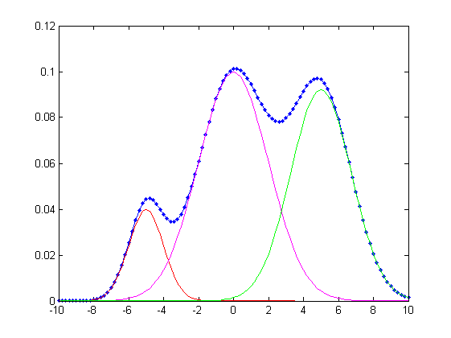
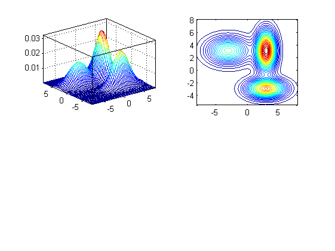

gmmEval
Evaluation of a GMM (Gaussian mixture model)
Contents
Syntax
- [logLike, gaussianProb] = gmmEval(data, gmmPrm);
- [logLike, gaussianProb] = gmmEval(data, gmmPrm, chunkSize);
Description
[logLike, gaussianProb] = gmmEval(data, gmmPrm) returns the log likelihood of a GMM model for each column of the given data matrix, where
data: dim x dataNum matrix where each column is a data point
gmmPrm(i): Parameters for Gaussian component i
- gmmPrm(i).mu: a mean vector of dim x 1
- gmmPrm(i).sigma: a covariance matrix of 3 possible dimensions:
- 1 x 1: identity covariance matrix times a constant for each Gaussian
- dim x 1: diagonal covariance matrix for each Gaussian
- dim x dim: full covariance matrix for each Gaussian
- gmmPrm(i).w: a weighting factor
chunkSize: size of a chunk for vectorization
- 1 for fully for-loop version
- inf for fully vectorized version (which could cause "out of memory" is data size is large)
- (To see the effects of chunkSize, try gmmEvalSpeedTest.m under test folder of DCPR toolbox.)
logLike: 1 x dataNum vector of output probabilities
gaussianProb(i,j) is the probability of data(:,j) to the i-th Gaussian (This is for gmmTrain.m only)
Example
The following example plots GMM results of 1-D data:
data=linspace(-10, 10, 101); gmmPrm(1).mu = -5; gmmPrm(1).sigma = 1; gmmPrm(1).w = 0.1; gmmPrm(2).mu = 0; gmmPrm(2).sigma = 4; gmmPrm(2).w = 0.5; gmmPrm(3).mu = 5; gmmPrm(3).sigma = 3; gmmPrm(3).w = 0.4; logLike = gmmEval(data, gmmPrm); prob=exp(logLike); figure; plot(data, prob, '.-'); line(data, gmmPrm(1).w*gaussian(data, gmmPrm(1)), 'color', 'r'); line(data, gmmPrm(2).w*gaussian(data, gmmPrm(2)), 'color', 'm'); line(data, gmmPrm(3).w*gaussian(data, gmmPrm(3)), 'color', 'g');
The following example plots GMM results of 2-D data:
gmmPrm(1).mu = [-3, 3]'; gmmPrm(1).sigma = [5, 2]'; gmmPrm(1).w = 0.3; gmmPrm(2).mu = [3, -3]'; gmmPrm(2).sigma = [4, 1]'; gmmPrm(2).w = 0.3; gmmPrm(3).mu = [3, 3]'; gmmPrm(3).sigma = [1, 4]'; gmmPrm(3).w = 0.4; bound = 8; pointNum = 51; x = linspace(-bound, bound, pointNum); y = linspace(-bound, bound, pointNum); [xx, yy] = meshgrid(x, y); data = [xx(:), yy(:)]'; logLike = gmmEval(data, gmmPrm); zz = reshape(exp(logLike), pointNum, pointNum); subplot(2,2,1); mesh(xx, yy, zz); axis tight; box on subplot(2,2,2); contour(xx, yy, zz, 30); axis image; box on